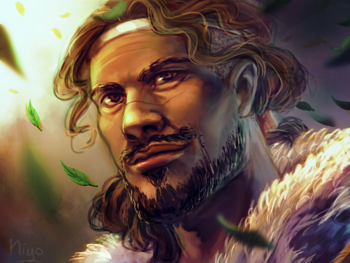

- 
- Name: Bëor
- Born: FA 262 ?
- Died: FA 355
- Gender: Male
- Race: Human
- Spouse: Unnamed Wife
- Titles: Chieftain of the House of Bëor , Vassal of Finrod Felagund
Bëor, also known as Bëor the Old, was the chieftain of the first house of the Edain to cross the Blue Mountains into Beleriand during the First Age.
Biography
Bëor was originally named Balan. He and his folk were the first of Mankind to encounter the Ñoldor of Beleriand when King Finrod Felagund happened upon their camp in Ossiriand in the year FA 310. After years of wandering westwards in search of the High Elves (or the Valar, of whom the Bëorians had heard rumor from the lesser elves they had met in the east), Bëor was eager to establish good relations with Felagund, and the two strove to understand each other. The language barrier was not a major problem due to the similarities between the tongue of the Bëorians, which had been influenced by the elves they had met earlier, and the Sindarin tongue. In the tongue of his people, called Taliska, Bëor was named 'Balan'. The name he is more commonly called by, Bëor was actually the Taliska word for 'vassal', which he earned in the service of Felagund.Bëor and his people settled first in Ossiriand, but were at odds with the Green-elves that already dwelt there, for the men competed with the elves for food and natural resources. Therefore, on the advice of Felagund, Bëor led his people to Estolad, the encampment, in the realm of Amrod and Amras, sons of Fëanor. There the people of the first house became more numerous and were enriched by the teachings of the Eldar. Bëor, however, was not content and wanted to leave Estolad and enter instead into the service of King Felagund. He committed the rule of his people to Baran, his son, and departed with Felagund to his realm of Nargothrond. There Bëor continued his service with Felagund, and he returned never to Estolad. He died in the year 355 of the First Age at the age ninety-three, having spent 44 years in the service of Felagund. His death was greatly lamented by King Finrod and his people, who witnessed for the first time the Gift of Men: death. But in the end Bëor gave up his life willingly and died in peace, a thing previously unheard of by the elves, who wondered much at the strange lives of men. Bëor was held among the Wise of the Edain, and was revered by many among the Eldar. He laid the foundations for cooperation between the Eldar and the Edain in years to come and was the forefather of such heroic figures as Barahir, his son Beren Camlost, Túrin Turambar, Tuor his cousin, and Eärendil the Mariner, son of Tuor.